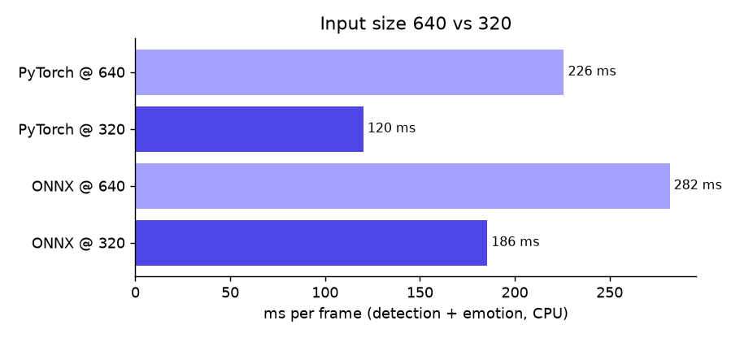

Start your webcam, upload a photo, or pick a sample image. Click a face to see its emotion scores.
The largest face is selected by default.
The pre/post-processing in this page (letterbox, YOLO decoding + NMS, face crop, HSEmotion normalisation) was re-implemented in NumPy and compared with the original ultralytics + hsemotion_onnx pipeline on the sample images.
Median time per frame on zidane.jpg (laptop CPU, detection + emotion for every face). This demo uses 320 px.

Licenses: the face detector is a YOLOv8 model trained with Ultralytics (AGPL-3.0); the emotion model is HSEmotion enet_b0_8_best_afew (Apache-2.0, trained on AffectNet/AFEW for research). Sample images: Ultralytics assets and the NASA astronaut photo shipped with scikit-image (public domain).